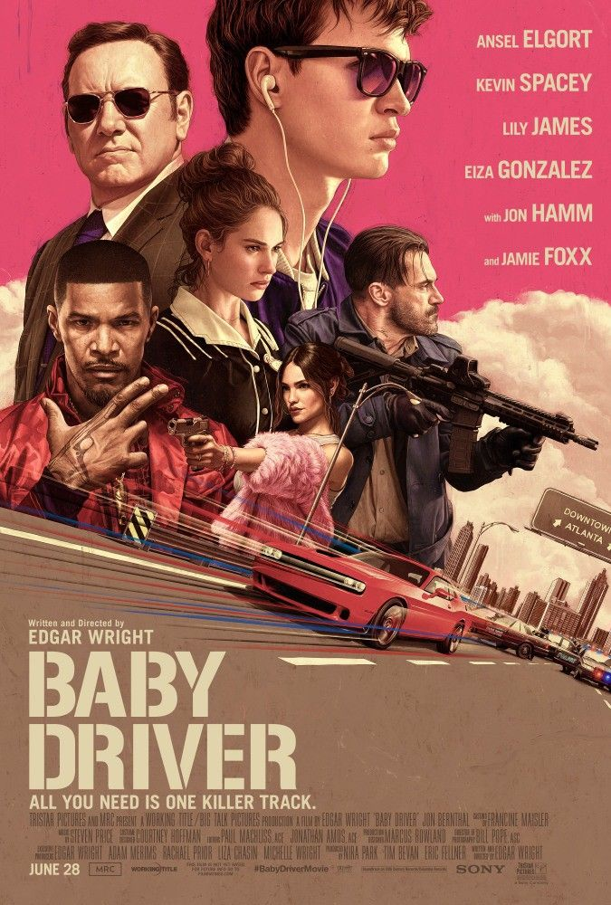

"Малюк на драйві" (Baby Driver) - це стильний кримінальний бойовик 2017 року, знятий режисером Едгаром Райтом. Фільм поєднує динамічні автомобільні погоні, музику та драматичну історію персонажа.
Головний герой, відомий як Малюк, є надзвичайно талановитим водієм. Він працює на злочинців, допомагаючи їм тікати після пограбувань. Через травму з дитинства він постійно слухає музику, яка допомагає йому концентруватися та задає ритм його рухам і навіть перестрілкам.
З часом Малюк закохується в дівчину на ім’я Дебора і мріє залишити кримінальне життя. Однак його бос змушує його виконати ще одну небезпечну справу, яка виходить з-під контролю.
Особливістю фільму є те, що багато сцен синхронізовані з музикою - кожен рух, кожна погоня і навіть постріли відбуваються в такт саундтреку, що робить фільм унікальним і дуже атмосферним.
Рік: 2017
Жанр: бойовик, кримінал, музика
Режисер: Едгар Райт
Головні актори: Енсел Елгорт, Лілі Джеймс, Кевін Спейсі
Тривалість: 113 хвилин